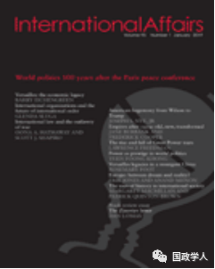
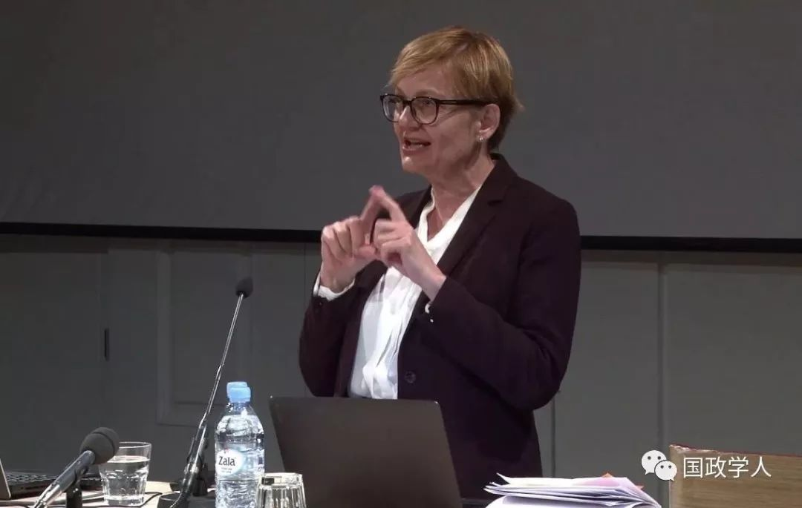

收录于合集

简 介
** 【作者】** 格伦达·斯拉格(Glenda Sluga)，国际关系史教授，澳大利亚研究理事会凯思琳·菲茨帕翠克奖获得者（ARC Kathleen Fitzpatrick Laureate Fellow），她在国际关系史、国际主义、欧洲民族主义史、主权、身份、移民和性别史等方面发表了大量著作。
** **【 编译 】****刘孝玉
** **【 校对 】****周心培 彭小朵
** **【 审核 】****虞敷扬
** 【 来源 】** International Affairs , Volume 95, Issue 1, January 2019, Pages 25–43. https://doi.org/10.1093/ia/iiy242.
** 【期刊】** 《国际事务》是国际关系领域的一流学术期刊，也是多学科综合性学术期刊。本刊于1992年由伦敦皇家国际事务研究所查塔姆学院(Chatham House)创立，内容来源广泛，力图囊括业内专家、学术新秀对重点、热点问题的最新思考。截至2017年，期刊影响因子为2.952，位居世界第8。

追忆 1919 ：国际组织与国际秩序的未来
Remembering1919: international organizations and the future of international order

内容提要
在现存国际秩序江河日下之际，人们开始追忆和怀念1919年，那是现存国际秩序起源的年份。 **巴黎和会之后的大半个世纪，社会公众和学术界更多地关注国际联盟未能成功阻止二战的爆发，而忽视了国际联盟创设这一事件本身。这种历史评价使得国际组织研究受滞，更使得那些首倡国际组织的人连同他们的期望，以及曾经把他们推到风口浪尖的社会思潮都被尘封殆尽。不过，如今历史学家日益将 1919年置于更悠久、更深刻的历史中重新审视，这种思考综合了国内政治和国际政治两个视角。**从这个角度看，1919年既标志着全球民族主义思潮的延续，又显示出国际组织，特别是政府间国际组织的影响。二十世纪国家和国际秩序的历史碎片正在重建一个不断革新的由国际实体组成的“多元”制度空间，其中涌动着代表、官僚和非政府组织。
世界上许多政府间组织存在的时间比一些民族国家还要长。众所周知，联合国脱胎于国际联盟，世界卫生组织起源于国际联盟的卫生组织，而国际劳工组织则名义上保持不变。 **然而这些国际组织是如何运作的，谁在其中运作，以及许多其他可以追溯到 1919年甚至更早时候的国际组织的细节却很少被提及。**时值一战结束100周年之际，是时候去思考新的历史叙事向我们展示国际期望的视域变化、国际政治文化的社会维度、其国内政治根源、以及曾经被遗忘的国际组织的历史意味着什么。文章指出把这段国际历史收入人们的历史意识，并不是忽视现实政治，而是提出了一连串其他类型的问题: 国际组织 为何、为谁而被创造出来 ? 在 20世纪，通过国际组织治理的承诺何时看起来与民族国家一样现实或重要? 这些时刻有多重要 ?它们改变了什么?如果没有它们， 世界 会有 何 不同?
在这篇文章中，作者把这种新的历史叙事的各个方面汇集在一起，以便探究 1919年 之后是 如何使世界进入了一个常常 把 国际组织作为多边主义必要工具 来深入讨论 的世纪 。 这种讨论有时会沉寂，因为国际组织并没能阻止战争; 但是， 国际组织的确 对世界 产生了 其他影响 ：在制度设计时， 它 迫 使人们 思考 到如何解决世界上最严重的问题 ； 在国际治理的实践中，它代表世界人民 多样化的利益，甚至也包括无国籍人士 。 在20世纪的关键时刻，世界级问题，世界级应对，使人们脑洞大开——即使付诸实践的希望渺茫。如果一定要说这段历史有什么用处的话，那便是可以把国际组织的现状同历史联系起来，并帮助我们在此基础上畅想国际秩序未来。
文章导读
**1
**
为什么要创建国际组织？为了谁？
一个世纪以前，对第一次“全面战争”心有余悸，为实现和平而聚集在一起的战胜国政府代表们清晰地分析了国际形势，并提出了我们今天的政治家难以想出的变革构想。从伍德罗·威尔逊(Woodrow Wilson)总统治下的美国到大正时代(Taisho-era)的日本，和平缔造者们都把焦点放在了民族自决原则和国际联盟形式的国际政府上。
无论是国内层面还是国际层面的政策纲领都并非毫无铺垫地出现在1919年的巴黎和会上。历史学家也不能简单地把联盟的建立归功或归咎于美国总统威尔逊(无论好坏)。同“民族自决原则”一样，国联的成立成为一个国际热点话题。到19世纪80年代，关注社会问题和社会运动的跨国组织蓬勃发展，其中包括妇女投票权组织以及协调跨州、跨语言和跨多个货币区的邮件、货币和信息流动的国际组织；所谓的“公共国际联盟”将火车和航运服务、电报线路和政府机构连接起来，这些机构大部分位于伯尔尼、布鲁塞尔和海牙等欧洲城市。由此可以看出现存国际秩序地缘上的失衡。
欧洲的地位在这一段国际组织的历史时期中是帝国主义政治的副产品。基于冲突威胁现状的假设，那些帝国努力控制其激烈的经济和军事竞争。正是这种需求驱使俄罗斯于1899年，邀请欧洲、美国、中国和奥斯曼帝国政府参加第一届海牙和平会议。议程是讨论“国际合作”、裁军和国际(人道主义)战争法的编撰。最终签订了一系列的公约并建立了海牙常设仲裁法院。 战前 “国际化”经历——集会、 合作、技术协调、 仲裁 ——开创了先河，这种联络在巴黎和会上起了作用。
与国际组织的历史同样重要的是战争年代的社会史，当时赞成通过国际组织进行国际治理的社会组织生根发芽。 纵贯欧洲，从法国到奥地利，再到英国控制下的领土范围，国际联盟政治上的吸引力日益增强，尽管社会形式各不相同。在远东，中华民国建立了国际联盟的中国分会，此外还有一个与国际联盟有关的研究会。
到1919年，在参加和平谈判的国家中，播种了“民族自决原则”和国际联盟的政治和社会土壤逐渐成熟。所有关于联盟和“国际政府”重要性的讨论很快引发了一些问题:未来的联盟应该是各国之间的一种社交活动，还是一个国际机构的实际治理?是联盟还是联邦？此种联合是否可以分解？一个联盟应该对其他国际组织，帝国和国家施加什么样的影响?谁应该被包括在联盟中，以充实其组织架构?
在巴黎和会上，举足轻重的是美国、英国、法国和意大利的观点。部分英国代表认为，该联盟将采取19世纪帝国会议的模式，只偶尔举行会议，“由对本国人民负责的政治家组成，并需要一致同意”。一位英国代表则更大胆地起草了国联的“社会契约”并声称国家的绝对主权已经过时了。法国政府把联盟设想成一个被授权维持和平和保障主权的集团；通过设立一个权威的国际机构，联盟会使其成员接受其裁定，就像接受国际法法庭的裁定一样。作为战败国，德国没有话语权，不过一位在战前参与国际仲裁的德国老将瓦尔特·舒金(Walther Schucking)也提交了一份以德国联邦模式为基础的“世界议会”计划。瑞士提交的文件主张以赫尔韦蒂式的“不可分割的国家联盟”的形象建立联邦联盟；他们的比例代表制模式使人口众多的中国比法国、德国、意大利或日本更具影响力，尽管该计划很快被英国驳回。
巴黎和会成功地扩大了公众对于国际政治的期望。它设立国际组织，并给予“非政府组织”正式的身份，在一定程度上满足了这些期望。其结果是更广泛的个人参与、声明和争端以及一定程度的幻想破灭。
**2
**
什么是国际联盟？
尽管新的国际联盟存在种种局限，但其成员也享有优势，不仅仅是国际合法性。国际联盟的扩展强化了联盟宣扬的使命：“国际合作”与“国际和平与安全”，尽管其结构特征并不具备包容性。联盟最高权力被授予一个只有四个常任理事国组成的联盟理事会，即当时结盟的四个帝国:英国、法国、意大利和日本。此外，还有四个非常任理事国亦步亦趋。非常任理事国由联盟大会选举产生，任期三年。理事会指导大会事务，并掌控联盟秘书处。理事会和大会的议案都不得侵犯成员国国内管辖权。
相对于一些人的预期，国联的职能范围有限；而美国(共和党)参议院对光辉孤立的偏爱，又使得美国缺席，在许多人看来，这两点已经宣告国联的失败。然而，建立国联的倡议却产生了某种力量和影响。 国联 的存在鼓励 脚踏实地而 有抱负的国家在世界新舞台上 发声 。 中等和较小的国家发现在这里他们的诉求被重视。当国家或帝国让非国家行为者失望时，他们向联盟委员会提出自己的要求。即使是国联最具争议的创新之一——“委任统治”制度，也意外地成为殖民地向帝国权力机构进行反击的武器。1919年，为和平提供建议的美国和英国专家突然提出了“委任统治”的概念，认为这是一种体面的方式，可以瓜分战败帝国占领的殖民地领土，并将之视为授予战胜国的一种“神圣的信任”。这成为殖民地托管制度的道义支撑并最终被联合国变相继承，直到1994年才被废除。
国联的执行力较弱，流于空谈或者于事无补。但是，在仿效民主国家的制度安排和政治会议的过程中， 联盟规划了国际层面的代表、辩论和谈判的蓝图。 尽管签署妇女宪章的要求被回绝，但妇女仍相对积极参与联盟事务。妇女国际和平与自由联盟是第一批在日内瓦设立总部的非政府组织之一。同样值得关注的是国际劳工组织，这是巴黎和会的另一个产物。几十年来，欧洲大国一直在讨论劳工问题和规章制度，以确保没有国家通过降低劳工标准而获得相对经济优势。进步主义和帝国主义使命感的典型结合渗透进了国联处理世界政治、社会甚至经济命运的方式中，这让历史学家们连同当时的许多人，质疑它到底是不是帝国主义的工具。
国联有什么用?当时流行的理论称，在联盟的走廊、会议室、咖啡厅和餐厅里设计出来的社交风格培养了人们对国际治理的热情，他们认为国际治理是通往和平的道路。新的历史研究也表明，官僚机构的实际工作发挥了作用。国联出版的关于军事组织、军备和经济的文本和表格数据的年度汇编使了解每个国家进出口武器的数量和价值成为可能。没有这些数据，裁军谈判、军备贸易管制以及公众对军事化的认知和觉醒都是不可能的。联盟收集的财政数据供政治家、经济学家和企业使用。这些是“真正具有可比性的贸易统计数据”，没有这些数据，“世界经济”将不得要领。
文章认为，所有强调这些努力的国际思维都是“斯塔德主义” (世界的进步可以用政治团体数量的增加来衡量)，技术官僚主义(科学可以解决世界上的问题)和资本主义(贸易和商业的自由流动可以将繁荣与和平带给每个人)假设的交集。上述每一种思维都影响了国联经济和金融组织(EFO)的创立。EFO是世界上第一个致力于促进经济和货币合作的政府间机构，其重点是将“经济和金融与政治和社会联系起来”。
更广泛地说，欧洲的国际组织中充斥着政府间机构和“公共国际联盟”，它们监督着基础设施和法规的全球化，包括电报和电话、航运和航空领域。海牙常设国际法院(现在的国际法院)继承了仲裁法院的工作，其战前的前身仅限于裁决国家间的争端，而新的法院可以审理和裁决任何具有国际性质的争端。随着世界的变化，这个以国家为基础的联盟也随之改变，它在国际责任与代表国家和帝国成员利益之间、在官僚和代表的进步倾向与保守倾向之间左右为难。
到20世纪30年代，政府间国际组织受到民粹主义和法西斯主义思潮冲击。尽管如此，国际组织的政治潜力仍旧引起了法西斯政权的兴趣，他们冒险进行自己的改造或试图影响现有机构。鉴于事态的转变，人们不得不承认，国际层面的思想和机构和国家层面的一样易于替代。一个出于维持和平和防止布尔什维克主义蔓延的愿望而诞生的机构，到30年代末已成为一个实体。尽管关于各国应在多大程度上接受国际监督仍然存在争议，但它内部的动力仍然是最大程度的保障和平，包括倡导人道主义和消除不平等。
3
1919年巴黎和会的政治遗产是什么？ ****
国际联盟最终未能阻止大萧条、法西斯主义的崛起或第二次世界大战，再加上它本身的矛盾倾向，本应该轻轻松松扼杀国际组织对世界政治的重要性。 相反，令人惊奇的是，从上世纪 30年代末开始，公民团体 一直 **倡导 “世界政府”的新概念。**1942年，这股势头转向了美国，共和党总统候选人温德尔•威尔基(Wendell Willkie)的口号是“同一个世界”。民主党富兰克林·罗斯福赢得总统选举后吸纳了这一思想，并招募威尔基传播该理念,促使美国作为世界新秩序的领袖，并建立一个“联合国”联盟(现在包括俄罗斯),打击德国,意大利和日本。
根据“奥弗顿窗口”理论，在二十世纪中叶，政府间组织的多边协议的合法性得以加强。1944年，在蒙特利尔躲避法西斯威胁时，国际劳工组织绝处逢生，通过将经济权利和平等奉为国际义务，扩大了自己的职责范围。同十九世纪和二十世纪初一样，人们仍然在谈论统一世界语言和世界货币，并且提出了更多具体的雄心勃勃的计划。罗斯福欣然接受澳大利亚水果农场主弗兰克•利杰特•麦克杜格尔(Frank Lidgett Mcdougal)建立粮食和农业组织的计划，因为它有可能实现《大西洋宪章》关于“免于匮乏”的承诺。虽然粮农组织通过应用科学和知识传播继续以消除世界饥饿为目标，但实际上粮农组织已大大减少了一系列办事处和目标。1945年4月在旧金山召开的联合国国际组织会议——起草联合国宪章——汇集了这些计划，甚至更多。
就像1919年一样，组织体系的建立与政治野心和体制权力的范围并不匹配。联合国及其组成机构的使命具有不可否认的国际性，但与国联一样，它们的宗旨是代表会员国，而不干涉国内主权问题。与国联理事会不同，联合国安理会常任理事国可以使用否决权来影响政治:这是1945年联合国使美国和苏联参与联盟的结构性代价。《联合国宪章》最终版体现了自由民主(国际)政治制度化的双重面貌。它主张不分性别、种族、语言或宗教的权利和自由，并允许例外主义。它庄严地规定国家主权至上，并将联盟对民族权利的强调改为对“人权”的强调。
本世纪初，越来越多的政府间组织在越来越多的领域中起着重要作用。随着联合国大会的影响不断扩大，联合国变得越来越“全球化”，在联合国自己的“任务清单”上，废除帝国主义的遗风势在必行。同样的发展意味着，更多在经济和政治上更强势的成员利用政府间组织失去了兴趣。上世纪70年代，联合国被其成员国之间的事态发展所纠缠，它启动了或许是所有项目中最激进的一个，即监督“新的国际经济秩序”。如今，历史学家们正追溯上世纪70年代，以理解国际货币基金组织（IMF）和世贸组织(WTO)等新的联合国相关机构，在推动国际监管朝着有利于货币主义经济体的方向发展方面，所扮演的角色。过去，国际劳工组织和欧洲劳工组织曾试图将政治和经济重新联系起来，甚至利用国际经济治理来建立社会正义，但现在，世贸组织占据了优势，占据了国际劳工组织在日内瓦的大楼，抹去了这幢大楼曾经以劳工为主要关注点的所有痕迹。
上世纪90年代，随着冷战的结束，在解体的苏联和南斯拉夫联盟中，民族主义煽动的暴力对现有的国际秩序构成了新的挑战，这使得联合国再次成为国际思维的中心。二十一世纪初出现了一些概念，即将国际责任的界限进一步推入国家主权的领域，并回到社会正义的老主题。“人的安全”是指国际组织不仅要在战时保护公民，还要通过经济干预来结束战争，消除贫困和不平等;“保护的责任”认定，当人们受到身体方面的威胁时，国际干预具有重要意义，而不再考虑对国家主权的侵犯。后国际多极世界秩序的国际组织也随之成形, 八国集团(G8)或20国集团(G20)、达沃斯世界经济论坛(Davos World Economic Forum)，或其它以地区为基础的贸易协定，在去中心化的世界版图上不断变化并扰乱了全球政治格局。
4
想象的国际共同体？ ******
**
公众舆论对国际组织的地位一直是至关重要的。冷战结束时，联合国相关机构 调查了28个国家对联合国的认知。研究表明，早些年，美国公众对联合国的评价“积极多于消极”。到20世纪70年代，民意调查的支持率已跌至“净负值”。 1989年以后，人们的态度略有好转，但能提名秘书长或联合国行政人员的人就更少了。
尽管如此，当代政治仍然拥有在20世纪初建立起来的国际公共领域的工具。尽管围绕着存在的理由和国际组织的运作存在着历史遗忘，但仍然很难想象一个没有世卫组织协调应对无国界疾病的世界。国际劳工组织和联合国办公室见证了性别和劳工权利的扩大，并继续成为汇集共同利益的地方。尽管联合国经济和社会事务部(Department of Economic and Social Affairs)，这一并不起眼的统计部门没有得到多少赞誉，但联合国官僚机构仍在继续从事着数据收集和传播的世界性工作。国际协会联盟(Union of international Associations)是国际组织最早的支持者之一(成立于1907年)，至今仍在编撰年鉴，列出政府间组织和非政府组织。随着这些机构的增多，它们也涉猎一个世纪前我们所关注的问题，不过现在最引人注目的是环保、维持和平和人权问题。国际法通过私人和公共仲裁机构继续在国家生活中发挥着非凡的作用。
国际事务或是国家事务，何者才是当务之急?关键在于这些因素长期以来相互加强，以至于国际因素的影响与各国如何建立声誉和协调本国政策密不可分。目前，我们所了解的联合国的社会和政治历史比国联的少，但是我们所知道的描绘了二十世纪国际生活一幅密集的图画，尽管与这些组织有关的个人的幻想破灭和脱离接触的情况反复出现。 同国家机构的历史一样，对国际组织的历史分析告诉我们，不仅没有完美的机构，而且把它们 定性 为 “国际 ”对它们为政治生活增添了什么也至关重要。 然而，国际组织的权威和合法性经常受到质疑，原因正是它们的国际性。
5
结 论 ****
文章指出，当今时代再次显露出明显的危机感，甚至两个世纪前出现的国际政治最基本的信条 ——多边主义本身——似乎也受到威胁。全球主义者、国际主义者站到了国家主义者的对立面。 在这种情况下，这段密切 关注 个人和机构生活的新 的 历史 叙事 对我们 理解现状 有何帮助?
在基本层面上，这段历史加强了更为“抽象”的关于现存国际关系的记载， 为把国际组织视作现代多边主义和国际社会的基础提供了论据 。它反映了国际组织所产生的作用，不仅在规范和思想领域，而且在政治领域，也成为了现代政治文化结构的一部分。它收集了那些我们在以国家为立场的历史上很少听到的“异类”声音。在目前缺乏国际记忆的情况下，铭记国际历史的片段以及对国际组织目标的期望变化是值得的。这段新的历史也提醒我们，1919年留下的至少一项遗产是在制定国际议程方面对民族国家和民族主义产生了持久的影响。从这个角度看，国际组织在国家记忆中也有一席之地，是人们对当代政治想象力有限的标志。它们促使人们记住，对国家的政治期望曾经是多么广泛和多样化。
基于对国际组织历史的理解，文章指出，当我们引领未来时，我们面临的问题可能是：假定国际秩序来日方长，那么我们 是否需要 一个 对国际组织 的全新认知 ?
_ ** _ 本文由国政学人平台编译推荐**
往期阅读
【重磅速递】约瑟夫·奈：美国霸权的兴衰：从威尔逊到特朗普 | 国政学人
【重磅推荐】巴里·布赞：英国学派视角下的中国崛起 | 国政学人
【重磅速递】米尔斯海默：注定失败：自由主义国际秩序的兴衰 | 国政学人
【IPE重磅】罗伯特·基欧汉：国际政治经济学的新与旧 ｜国政学人
【百年国关】历史在国际社会中的应用：从巴黎和会到现在 | 国政学人
【国际组织】IO杂志：联合国维和行动的武力运用问题研究 | 国政学人
【国际秩序】为什么自由主义国际秩序理念将美国外交政策引入歧途？| 国政学人
【关系理论】“关系”：世界政治关系理论的中国话语 | 国政学人
【英国学派】张勇进：中国与全球国际社会中的自由主义等级制：实力与对规范变迁的协商 | 国政学人
【地区秩序】论经济实力的可转化性：中国经济崛起与东亚安全秩序 | 国政学人
【中俄关系】不得已的伙伴：系统-单元动态与中俄关系 | 国政学人
【IPE研究】美国对外贸易政策的“1934年体制”是如何形成的？| 国政学人
【现实主义】斯蒂芬·沃尔特：傲慢的终结与美国克制的新时代 | 国政学人
【理论批判】系统、层次与结构理论：沃尔兹的理论并非系统理论 | 国政学人
【外交政策】单极体系下的不和平状态与美国外交政策 | 国政学人
【欧洲研究】资本主义多样性与合规：加入欧盟后中东欧的经济改革 | 国政学人
【理论研究】吴建树：权力、道德、均势、联盟与摩根索——汉斯·摩根索的经典现实主义思想再解读
【友谊国关】将友谊重新引入国际关系：从中国到西方的关系本体论
【定量研究】政党实力和经济增长（Party Strength and Economic Growth）| 国政学人
【台湾学者】向骏：美国从“霸权稳定”到“霸凌不稳定” | 国政学人
【理论研究】巴里·布赞等：重思日本：主流国际关系理论的偏见 | 国政学人
【南亚研究】南亚对冲：中印竞争中经济和安全利益的平衡 | 国政学人
【外交政策】美国霸权的自我毁灭：华盛顿浪费了单极时代 | 国政学人
【定量研究】谁在欧洲议会中领导委员会？ ——基于2014年欧洲议会选举的研究 | 国政学人
【定量研究】暴露于难民危机之中会让当地人更有敌意吗？| 国政学人
【恐怖主义】恐怖主义组织扩展数据（EDTG）的介绍——从1970年到2016年 | 国政学人
【定量研究】赞助、信任和国家能力：庇护主义的历史轨迹 | 国政学人
【伊朗研究】比较伊朗伊斯兰革命前后威权政体的本质和领导能力 | 国政学人
【东亚研究】东亚的重叠式区域主义：决定因素和潜在影响 | 国政学人
【战争研究】不确定的战争：克劳塞维茨在全球时代仍适用吗？｜国政学人
【历史类比】克服西方历史想象的贫困：理解中国南海冲突的其他历史类比案例 | 国政学人
【区域重磅】阿米塔·阿查亚：重塑东南亚研究：自我怀疑、渴望和对比较的承诺 | 国政学人
【安全研究】打击军事力量的新时代：科技变化与核威慑的未来 ｜国政学人
【理论研究】砝码国家何以自抬身价？——两极格局下同盟政治中的“科林斯难题”研究
【中东研究】国际误识：以色列公共外交中的幽默政治和国家认同 | 国政学人
【IPE研究】公平贸易运动对内嵌自由主义的挑战 | 国政学人
【社群冲突】非洲农村社群冲突分析：剩男与一夫多妻的邻族 | 国政学人